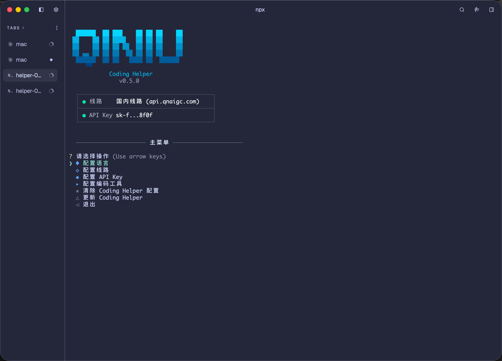
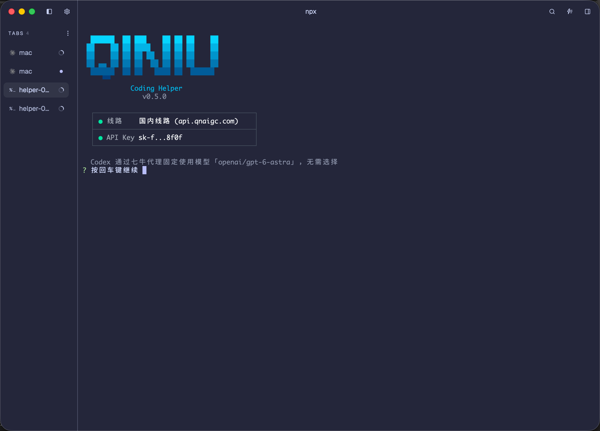
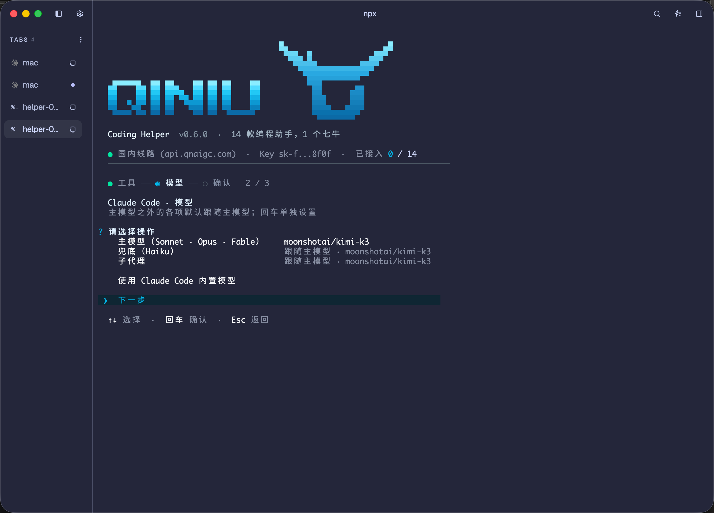
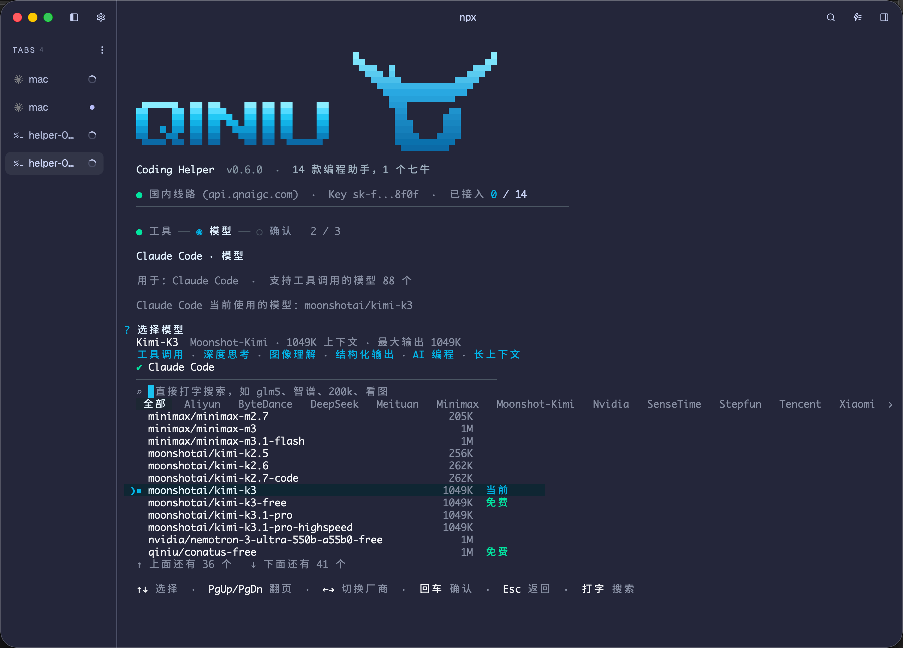

起因 2026.08.14 – 09.15 · 效果 10.31 – 11.23
降低工单总量
降低转人工率
为什么做 · 做了什么 · 现在的效果
2026.08.14 – 09.15 · MARS 1774
AI 工单集中在两类，而且不进 TS
TPM 100 万以内应由 AI 直接做，以上只有商务。这两类不进 TS。配置工单耗时长，新手也不会配。
前置会话 · 说了 429 的 330 人
自助提额只成了一半
没提上的人继续忍、流失，或者下次直接提工单，不再信 AI。当时转人工 29%，预期收到 9%。
前置 /api/v3/chat · 工单内 /api/v2/chat
429：先取证，再动限额
1
找编号
extract_customer_request_ids · normalize_customer_request_id 把 msg_ 换成 chatcmpl-
2
没有完整编号
list_recent_failed_ai_requests · 先 24 小时，没有 429 再查 7 天
3
查这一条
query_ai_inference_request_log · classify_rate_limit_failures 定性 RPM / TPM / TPD
4
免费模型直接结束
is_conatus_free_429 · 模型必须是 qiniu/conatus-free，不提额，不建商务任务
5
确认是账号侧 429，且 uid 对上
increase_ai_inference_rate_limits · 口述、笼统 429、并发，都不提
函数对上的上游接口
| 函数 | 接口 | 做什么 |
|---|
list_recent_failed_ai_requests | GET /admin/v4/u/stat/log | 只拿一条 429 的编号 |
query_ai_inference_request_log | GET /inapi/sales/request-log | 确认 HTTP 429，记下证据 |
query_ai_inference_rate_limits | GET /inapi/sales/user/info | 读当前 RPM / TPM |
increase_ai_inference_rate_limits | POST /inapi/sales/user/upsert | 写入后再 GET 核对 |
next_ticket_tpm | GET /seller/v1/query | 近 7 天用量不够就不提 |
这些工具挂在技能 ai-inference 上。工单面自动上限是 RPM 100、TPM 100 万。没查到详情、不是 429、uid 不一致，工具直接拒绝，不改限额。
两条不提额的出口
免费模型
is_conatus_free_429 只认精确模型 qiniu/conatus-free 且 HTTP 429。
命中后原样输出 CONATUS_FREE_429_MESSAGE。不调用 increase_ai_inference_rate_limits，也不调用 submit_business_task。后面再问“那怎么办”，仍走这句。
到了自动上限
query_ai_inference_rate_limits 带回 at_automatic_cap。这一轮只告知：扫码，或由我联系商务。不建单。
用户接受之后，才 submit_business_task，类型 quota_increase。创建任务不等于已经提额。
免费模型为什么不进提额，也不转人工
- 免费模型报的也是 429，但它的限流是独立的。
- 提升 RPM / TPM 对它没有效果，商务那边也没办法提升。
- 所以由 AI 直接给固定回答说明情况，不再转人工，用来降低转人工率。
落在 qdesk 的这些改动
| PR | 落了什么 |
|---|
| #18 | query_ai_inference_request_log |
| #102 | query_ai_inference_rate_limits |
| #107 · #128 | increase_ai_inference_rate_limits，确认是账号侧 429 才提 |
| #316 | 工单这轮带了截图，详情已查出完整编号，就按客户贴出的编号处理 |
| #321 | 24 小时没有 429，list_recent_failed_ai_requests 再查 7 天 |
| #305 · #306 | 工单面可以 submit_business_task，到顶之后才用 |
429 相关优化 · 修改后 10.31 – 11.23
修改后 10.31 – 11.23
429 相关优化
对照 10.07 – 10.30
429 相关优化
和对照期比
修改后 10.31 – 11.23，对照 10.07 – 10.30。拦截约 7.7 倍，自动提额约 2.5 倍。
配置工具优化
配置工具怎么走到重构
1
在 CC Switch 上做七牛专属版
最开始的想法。后面没有人维护。
2
做一键导入到 CCS 的按钮
还是挂在 CC Switch 上，依赖太重。
3
在原有 qiniu-coding-helper 上重构
不另起一个没人管的项目，也不再把配置交给 CCS。
配置工具优化 · 更新前 v0.5.0
指引不清楚，模型不能选

主菜单没有模型。想换，还得自己去客户端改。

Codex 写死 openai/gpt-6-astra，界面写着无需选择。
配置工具优化
新手按教程配，配到的不是他要的模型
- 用户想体验 DeepSeek，从官网点进教程，按步骤配完。
- 写进去的是 GPT。教程没有给选择，他以为自己在用 DeepSeek。
- 扣费和预期不符，才提工单。
- 我们按他的路径复现：不了解这块的人，确实会被带偏。
配置工具优化 · 重构后 v0.6.0
配置必须经过模型这一步

主模型、兜底、子代理可以分开设，不必跟死一个。

列表能搜，标出上下文和免费模型，不再写死。
其他优化 · Weiki · #308
模型目录改为实时读
list_available_models 每次调用都读上游，不再用进程内缓存、磁盘快照或启动时的旧列表。- 企业微信的报价目录也按这次查询实时读。
- 同一轮里再调一次，也不吃工具结果缓存，避免报出已经下线或改过约束的模型。
其他优化 · Weiki · #319
外部文档可以导入知识库
接口
POST /api/v1/knowledge-bases/{kb_id}/document-imports
Bearer key，而且这个知识库要在白名单里。来源提交 Markdown，qdesk 负责校验、去重、分块、写入。
怎么更新
以来源平台、来源库、外部文档 ID 认同一篇。先写入并核对新版本，再删旧的。
新版本写失败就留着旧内容。不改爬虫，也不接收外部传进来的向量。
其他优化 · Mars · #3473
技术支持首页改版
首页
重做右下圆弧、眉标、输入提示和常见问题卡片。横幅仍用管理端配置的地址，页面不写死。
深色模式在文件名后加 -dark 要配套图。加载失败就退回浅色图。
发送按钮
和 TS 的回复里，过长的一行会把底栏撑出卡片，右对齐的「发送」被裁掉。
现在长内容在输入框内换行。窗口窄时按钮换行，发送仍留在卡片里。
其他优化 · Mars · Weiki · #3467
建单和投诉限额下到后端
- 普通建单、Bearer 建单、AI 会话转人工，都走后端校验。伪造 UID 或群参数绕不过去。
- 个人工单按 UID 滚动 60 秒，默认最多 3 单，后台可改。白名单不限。群工单不占这个额度。
- 超限返回 429，不落单。同一工单按北京时间每天最多投诉一次，重复投诉返回 409。
其他优化 · Mars · Weiki · #3438 · #3450 · #3457
工单观测可以点进具体单
看什么
按原因标签看数量和 AI 闭环率，按自然周画柱图。标签下拉可以搜索。
AI 独立闭环只表示工单已结束、且没有实质的公开人工回复。不等于问题已经解决。
怎么追查
点每周柱图，或点问题分类，打开这一类的工单明细。接口是 GET /api/observability/tags/:tag/tickets。
按周用 week，按分类用 question_title。两种条件不能同时传。
其他优化 · Mars · Weiki · #3474 · #3472
任务可以改 UID，群按最新消息排
任务详情
新版任务页右侧可以改客户 UID，复用现有任务更新接口。数字 UID 直接查库，不依赖搜索。
保存成功后只更新这一块客户信息，不重载整页，也不冲掉还没保存的草稿。
QQ 群组
进入工作台的群组页时，按每群最后一条消息的时间倒序，带时间和最多 240 字摘要。
没有消息的群放在最后。停留在页面上不自动刷新，离开再进才重新加载。